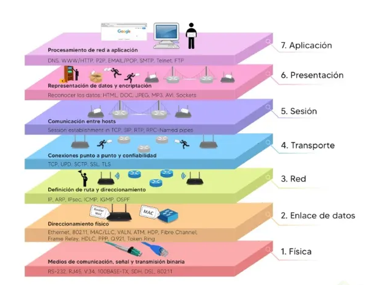

Capa de enlace y acceso al medio
La capa de enlace de datos se encarga de transferir información entre dispositivos que pertenecen a la misma red. Su función es garantizar que los datos puedan pasar correctamente de un nodo a otro a través del medio de conexión utilizado.
Funciones principales de la capa de enlace de datos
-
Direccionamiento físico
Identifica los dispositivos mediante direcciones MAC.
-
Encapsulamiento
Organiza la información en tramas para poder transmitirla.
-
Control de acceso
Define cuándo un dispositivo puede usar el medio de transmisión.
-
Detección de errores
Verifica si los datos llegaron correctamente.
En esta capa trabajan elementos como switches y direcciones MAC, fundamentales para la comunicación dentro de una red local.
Subcapas de enlace de datos
La capa de enlace de datos se divide en dos subcapas que trabajan juntas para permitir la comunicación entre dispositivos dentro de una red local.
-
LLC (Logical Link Control)
Se encarga de la comunicación lógica con la capa de red y ayuda a organizar el flujo de información entre los dispositivos.
-
MAC (Media Access Control)
Controla el acceso al medio físico y utiliza direcciones MAC para identificar cada dispositivo dentro de la red.
Ambas subcapas permiten que los datos viajen de forma ordenada y correcta dentro de una red local.
NIC - Tarjeta de red
La NIC (Network Interface Card) o tarjeta de red es el componente que permite conectar un dispositivo a una red, ya sea por cable o de forma inalámbrica.
-
Conexión física
Actúa como el enlace entre el dispositivo y el medio de transmisión.
-
Dirección MAC
Cada tarjeta posee una dirección física única que identifica al dispositivo dentro de la red.
-
Transmisión de datos
Convierte la información digital en señales que pueden viajar por cables, fibra óptica o Wi-Fi.
La NIC es fundamental para que un dispositivo pueda enviar y recibir información dentro de una red.
Conclusión
Las redes y las comunicaciones forman parte de nuestra vida cotidiana. Cada mensaje, búsqueda o archivo que enviamos depende de dispositivos, protocolos y modelos que permiten que la información viaje de un lugar a otro.
Comprender cómo funcionan las conexiones, las capas de comunicación y los distintos tipos de redes nos ayuda a entender mejor el mundo digital en el que vivimos y utilizamos todos los días.